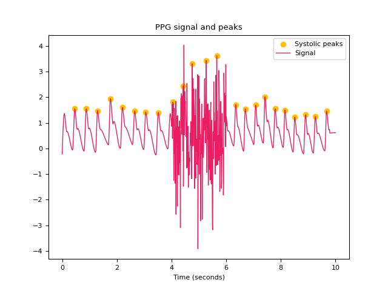
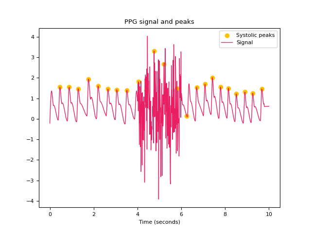
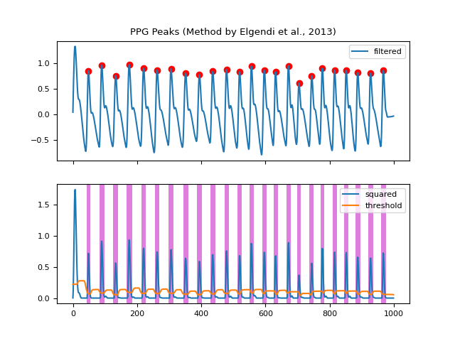
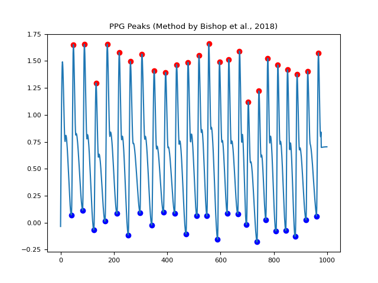
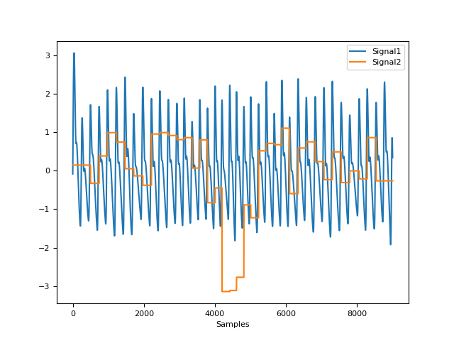
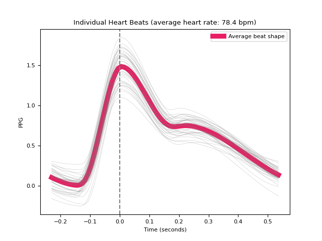

PPG#
Main#
ppg_process()#
- ppg_process(ppg_signal, sampling_rate=1000, method='elgendi', method_quality='templatematch', report=None, **kwargs)[source]#
Process a photoplethysmogram (PPG) signal
Convenience function that automatically processes a photoplethysmogram signal.
- Parameters:
ppg_signal (Union[list, np.array, pd.Series]) – The raw PPG channel.
sampling_rate (int) – The sampling frequency of
ppg_signal()(in Hz, i.e., samples/second).method (str) – The processing pipeline to apply. Can be one of
"elgendi". Defaults to"elgendi".method_quality (str) – The quality assessment approach to use. Can be one of
"templatematch","disimilarity". Defaults to"templatematch".report (str) – The filename of a report containing description and figures of processing (e.g.
"myreport.html"). Needs to be supplied if a report file should be generated. Defaults toNone. Can also be"text"to just print the text in the console without saving anything.**kwargs – Other arguments to be passed to specific methods. For more information, see
ppg_methods().
- Returns:
signals (DataFrame) – A DataFrame of same length as
ppg_signal()containing the following columns:PPG_Raw: The raw signal.PPG_Clean: The cleaned signal.PPG_Rate: The heart rate as measured based on PPG peaks.PPG_Peaks: The PPG peaks marked as “1” in a list of zeros.
info (dict) – A dictionary containing the information of peaks and the signals’ sampling rate.
See also
Examples
In [1]: import neurokit2 as nk In [2]: ppg = nk.ppg_simulate(duration=10, sampling_rate=1000, heart_rate=70) In [3]: signals, info = nk.ppg_process(ppg, sampling_rate=1000) In [4]: nk.ppg_plot(signals, info)

ppg_analyze()#
- ppg_analyze(data, sampling_rate=1000, method='auto')[source]#
Photoplethysmography (PPG) Analysis.
Performs PPG analysis on either epochs (event-related analysis) or on longer periods of data such as resting-state data.
- Parameters:
data (Union[dict, pd.DataFrame]) – A dictionary of epochs, containing one DataFrame per epoch, usually obtained via
epochs_create(), or a DataFrame containing all epochs, usually obtained viaepochs_to_df(). Can also take a DataFrame of processed signals from a longer period of data, typically generated byppg_process()orbio_process(). Can also take a dict containing sets of separate periods of data.sampling_rate (int) – The sampling frequency of the signal (in Hz, i.e., samples/second). Defaults to 1000Hz.
method (str) – Can be one of
"event-related"for event-related analysis on epochs, or"interval-related"for analysis on longer periods of data. Defaults to"auto"where the right method will be chosen based on the mean duration of the data ("event-related"for duration under 10s).
- Returns:
DataFrame – A dataframe containing the analyzed PPG features. If event-related analysis is conducted, each epoch is indicated by the
Labelcolumn. Seeppg_eventrelated()andppg_intervalrelated()docstrings for details.
See also
bio_process,ppg_process,epochs_create,ppg_eventrelated,ppg_intervalrelatedExamples
In [1]: import neurokit2 as nk # Example 1: Simulate data for event-related analysis In [2]: ppg = nk.ppg_simulate(duration=20, sampling_rate=1000) # Process data In [3]: ppg_signals, info = nk.ppg_process(ppg, sampling_rate=1000) In [4]: epochs = nk.epochs_create(ppg_signals, events=[5000, 10000, 15000], ...: epochs_start=-0.1, epochs_end=1.9) ...: # Analyze In [5]: analyze_epochs = nk.ppg_analyze(epochs, sampling_rate=1000) In [6]: analyze_epochs Out[6]: Label Event_Onset ... PPG_Rate_Trend_Quadratic PPG_Rate_Trend_R2 1 1 5000 ... 0.120756 0.995928 2 2 10000 ... 0.214880 0.989385 3 3 15000 ... -1.193349 0.471433 [3 rows x 12 columns] # Example 2: Download the resting-state data In [7]: data = nk.data("bio_resting_5min_100hz") # Process the data In [8]: df, info = nk.ppg_process(data["PPG"], sampling_rate=100) # Analyze In [9]: analyze_df = nk.ppg_analyze(df, sampling_rate=100) In [10]: analyze_df Out[10]: PPG_Rate_Mean HRV_MeanNN HRV_SDNN ... HRV_HFD HRV_KFD HRV_LZC 0 86.401345 694.686775 49.380646 ... 1.834993 2.714813 0.852819 [1 rows x 92 columns]
ppg_simulate()#
- ppg_simulate(duration=120, sampling_rate=1000, heart_rate=70, frequency_modulation=0.2, ibi_randomness=0.1, drift=0, motion_amplitude=0.1, powerline_amplitude=0.01, burst_number=0, burst_amplitude=1, random_state=None, random_state_distort='spawn', show=False)[source]#
Simulate a photoplethysmogram (PPG) signal
Phenomenological approximation of PPG. The PPG wave is described with four landmarks: wave onset, location of the systolic peak, location of the dicrotic notch and location of the diastolic peaks. These landmarks are defined as x and y coordinates (in a time series). These coordinates are then interpolated at the desired sampling rate to obtain the PPG signal.
- Parameters:
duration (int) – Desired recording length in seconds. The default is 120.
sampling_rate (int) – The desired sampling rate (in Hz, i.e., samples/second). The default is 1000.
heart_rate (int) – Desired simulated heart rate (in beats per minute). The default is 70. Note that for the ECGSYN method, random fluctuations are to be expected to mimic a real heart rate. These fluctuations can cause some slight discrepancies between the requested heart rate and the empirical heart rate, especially for shorter signals.
frequency_modulation (float) – Float between 0 and 1. Determines how pronounced respiratory sinus arrythmia (RSA) is (0 corresponds to absence of RSA). The default is 0.3.
ibi_randomness (float) – Float between 0 and 1. Determines how much random noise there is in the duration of each PPG wave (0 corresponds to absence of variation). The default is 0.1.
drift (float) – Float between 0 and 1. Determines how pronounced the baseline drift (.05 Hz) is (0 corresponds to absence of baseline drift). The default is 1.
motion_amplitude (float) – Float between 0 and 1. Determines how pronounced the motion artifact (0.5 Hz) is (0 corresponds to absence of motion artifact). The default is 0.1.
powerline_amplitude (float) – Float between 0 and 1. Determines how pronounced the powerline artifact (50 Hz) is (0 corresponds to absence of powerline artifact). Note that powerline_amplitude > 0 is only possible if
sampling_rateis >= 500. The default is 0.1.burst_amplitude (float) – Float between 0 and 1. Determines how pronounced high frequency burst artifacts are (0 corresponds to absence of bursts). The default is 1.
burst_number (int) – Determines how many high frequency burst artifacts occur. The default is 0.
show (bool) – If
True, returns a plot of the landmarks and interpolated PPG. Useful for debugging.random_state (None, int, numpy.random.RandomState or numpy.random.Generator) – Seed for the random number generator. See for
misc.check_random_statefor further information.random_state_distort ({‘legacy’, ‘spawn’}, None, int, numpy.random.RandomState or numpy.random.Generator) – Random state to be used to distort the signal. If
"legacy", use the same random state used to generate the signal (discouraged as it creates dependent random streams). If"spawn", spawn independent children random number generators from the random_state argument. If any of the other types, generate independent children random number generators from the random_state_distort provided (this allows generating multiple version of the same signal distorted by different random noise realizations).
- Returns:
ppg (array) – A vector containing the PPG.
See also
ecg_simulate,rsp_simulate,eda_simulate,emg_simulateExamples
In [1]: import neurokit2 as nk In [2]: ppg = nk.ppg_simulate(duration=40, sampling_rate=500, heart_rate=75, random_state=42)
ppg_plot()#
- ppg_plot(ppg_signals, info=None, static=True)[source]#
Visualize photoplethysmogram (PPG) data
Visualize the PPG signal processing.
- Parameters:
ppg_signals (DataFrame) – DataFrame obtained from
ppg_process().info (dict) – The information Dict returned by
ppg_process(). Defaults toNone.static (bool) – If True, a static plot will be generated with matplotlib. If False, an interactive plot will be generated with plotly. Defaults to True.
- Returns:
See
ecg_plot()for details on how to access the figure, modify the size and save it.
See also
Examples
In [1]: import neurokit2 as nk # Simulate data In [2]: ppg = nk.ppg_simulate(duration=10, sampling_rate=100, heart_rate=70) # Process signal In [3]: signals, info = nk.ppg_process(ppg, sampling_rate=100) # Plot In [4]: nk.ppg_plot(signals, info)

Preprocessing#
ppg_clean()#
- ppg_clean(ppg_signal, sampling_rate=1000, heart_rate=None, method='elgendi')[source]#
Clean a photoplethysmogram (PPG) signal
Prepare a raw PPG signal for systolic peak detection.
- Parameters:
ppg_signal (Union[list, np.array, pd.Series]) – The raw PPG channel.
heart_rate (Union[int, float]) – The heart rate of the PPG signal. Applicable only if method is
"nabian2018"to check that filter frequency is appropriate.sampling_rate (int) – The sampling frequency of the PPG (in Hz, i.e., samples/second). The default is 1000.
method (str) – The processing pipeline to apply. Can be one of
"elgendi","nabian2018", or"none". The default is"elgendi". If"none"is passed, the raw signal will be returned without any cleaning.
- Returns:
clean (array) – A vector containing the cleaned PPG.
See also
Examples
In [1]: import neurokit2 as nk In [2]: import pandas as pd In [3]: import matplotlib.pyplot as plt # Simulate and clean signal In [4]: ppg = nk.ppg_simulate(heart_rate=75, duration=30) In [5]: ppg_elgendi = nk.ppg_clean(ppg, method='elgendi') In [6]: ppg_nabian = nk.ppg_clean(ppg, method='nabian2018', heart_rate=75) # Plot and compare methods In [7]: signals = pd.DataFrame({'PPG_Raw' : ppg, ...: 'PPG_Elgendi' : ppg_elgendi, ...: 'PPG_Nabian' : ppg_nabian}) ...: In [8]: signals.plot() Out[8]: <Axes: >

References
Nabian, M., Yin, Y., Wormwood, J., Quigley, K. S., Barrett, L. F., & Ostadabbas, S. (2018). An open-source feature extraction tool for the analysis of peripheral physiological data. IEEE Journal of Translational Engineering in Health and Medicine, 6, 1-11.
M. Elgendi, I. Norton, M. Brearley, D. Abbott, and D. Schuurmans (2013). Systolic peak detection in acceleration photoplethysmograms measured from emergency responders in tropical conditions. PLoS ONE, 8(10), 1–11.
ppg_peaks()#
- ppg_peaks(ppg_cleaned, sampling_rate=1000, method='elgendi', correct_artifacts=False, show=False, **kwargs)[source]#
Find systolic peaks in a photoplethysmogram (PPG) signal
Find the peaks in an PPG signal using the specified method. You can pass an unfiltered PPG signals as input, but typically a filtered PPG (cleaned using
ppg_clean()) will result in better results.Note
Please help us improve the methods’ documentation and features.
- Parameters:
ppg_cleaned (Union[list, np.array, pd.Series]) – The cleaned PPG channel as returned by
ppg_clean().sampling_rate (int) – The sampling frequency of
ppg_cleaned(in Hz, i.e., samples/second). Defaults to 1000.method (str) – The processing pipeline to apply. Can be one of
"elgendi","bishop","charlton". The default is"elgendi".correct_artifacts (bool) – Whether or not to identify and fix artifacts, using the method by Lipponen & Tarvainen (2019).
show (bool) – If
True, will show a plot of the signal with peaks. Defaults toFalse.**kwargs – Additional keyword arguments, usually specific for each method.
- Returns:
signals (DataFrame) – A DataFrame of same length as the input signal in which occurrences of R-peaks marked as
1in a list of zeros with the same length asppg_cleaned. Accessible with the keys"PPG_Peaks".info (dict) – A dictionary containing additional information, in this case the samples at which R-peaks occur, accessible with the key
"PPG_Peaks", as well as the signals’ sampling rate, accessible with the key"sampling_rate".
See also
ppg_clean,ppg_fixpeaks,signal_fixpeaksExamples
 In [1]: import neurokit2 as nk In [2]: import numpy as np In [3]: ppg = nk.ppg_simulate(heart_rate=75, duration=20, sampling_rate=50) In [4]: ppg[400:600] = ppg[400:600] + np.random.normal(0, 1.25, 200) # Default method (Elgendi et al., 2013) In [5]: peaks, info = nk.ppg_peaks(ppg, sampling_rate=100, method="elgendi", show=True) In [6]: info["PPG_Peaks"] Out[6]: array([ 48, 88, 129, 175, 218, 262, 304, 349, 401, 447, 486, 519, 559, 593, 632, 669, 705, 741, 777, 814, 852, 889, 925, 966]) # Method by Bishop et al., (2018) In [7]: peaks, info = nk.ppg_peaks(ppg, sampling_rate=100, method="bishop", show=True) # Correct artifacts In [8]: peaks, info = nk.ppg_peaks(ppg, sampling_rate=100, correct_artifacts=True, show=True)
References
Elgendi, M., Norton, I., Brearley, M., Abbott, D., & Schuurmans, D. (2013). Systolic peak detection in acceleration photoplethysmograms measured from emergency responders in tropical conditions. PloS one, 8(10), e76585.
Bishop, S. M., & Ercole, A. (2018). Multi-scale peak and trough detection optimised for periodic and quasi-periodic neuroscience data. In Intracranial Pressure & Neuromonitoring XVI (pp. 189-195). Springer International Publishing.
Charlton, P. H. et al. (2025). The MSPTDfast photoplethysmography beat detection algorithm: design, benchmarking, and open-source distribution. Physiological Measurement, 46, 035002.
{kind=link}
{kind=link}
{kind=link}
Analysis#
Miscellaneous#
ppg_findpeaks()#
- ppg_findpeaks(ppg_cleaned, sampling_rate=1000, method='elgendi', show=False, **kwargs)[source]#
Find systolic peaks in a photoplethysmogram (PPG) signal
Low-level function used by
ppg_peaks()to identify peaks in a PPG signal using a different set of algorithms. Use the main function and see its documentation for details.- Parameters:
ppg_cleaned (Union[list, np.array, pd.Series]) – The cleaned PPG channel as returned by
ppg_clean().sampling_rate (int) – The sampling frequency of the PPG (in Hz, i.e., samples/second). The default is 1000.
method (str) – The processing pipeline to apply. Can be one of
"elgendi","bishop". The default is"elgendi".show (bool) – If
True, returns a plot of the thresholds used during peak detection. Useful for debugging. The default isFalse.
- Returns:
info (dict) – A dictionary containing additional information, in this case the samples at which systolic peaks occur, accessible with the key
"PPG_Peaks".
See also
Examples
 In [1]: import neurokit2 as nk In [2]: import matplotlib.pyplot as plt In [3]: ppg = nk.ppg_simulate(heart_rate=75, duration=20, sampling_rate=50) In [4]: ppg_clean = nk.ppg_clean(ppg, sampling_rate=50) In [5]: peaks = nk.ppg_findpeaks(ppg_clean, sampling_rate=100, show=True) # Method by Bishop et al., (2018) In [6]: peaks = nk.ppg_findpeaks(ppg, method="bishop", show=True)
References
Elgendi, M., Norton, I., Brearley, M., Abbott, D., & Schuurmans, D. (2013). Systolic peak detection in acceleration photoplethysmograms measured from emergency responders in tropical conditions. PloS one, 8(10), e76585.
Bishop, S. M., & Ercole, A. (2018). Multi-scale peak and trough detection optimised for periodic and quasi-periodic neuroscience data. In Intracranial Pressure & Neuromonitoring XVI (pp. 189-195). Springer International Publishing.
Charlton, P. H. et al. (2025). The MSPTDfast photoplethysmography beat detection algorithm: design, benchmarking, and open-source distribution. Physiological Measurement, 46, 035002.
Charlton, P. H. et al. (2024). MSPTDfast: An Efficient Photoplethysmography Beat Detection Algorithm. Proc CinC.
{kind=link}
{kind=link}
Any function appearing below this point is not explicitly part of the documentation and should be added. Please open an issue if there is one.
Submodule for NeuroKit.
- ppg_methods(sampling_rate=1000, method='elgendi', method_cleaning='default', method_peaks='default', method_quality='default', **kwargs)[source]#
PPG Preprocessing Methods
This function analyzes and specifies the methods used in the preprocessing, and create a textual description of the methods used. It is used by
ppg_process()to dispatch the correct methods to each subroutine of the pipeline andppg_report()to create a preprocessing report.- Parameters:
sampling_rate (int) – The sampling frequency of the raw PPG signal (in Hz, i.e., samples/second).
method (str) – The method used for cleaning and peak finding if
"method_cleaning"and"method_peaks"are set to"default". Can be one of"elgendi". Defaults to"elgendi".method_cleaning (str) – The method used to clean the raw PPG signal. If
"default", will be set to the value of"method". Defaults to"default". For more information, see the"method"argument ofppg_clean().method_peaks (str) – The method used to find peaks. If
"default", will be set to the value of"method". Defaults to"default". For more information, see the"method"argument ofppg_findpeaks().method_quality (str) – The method used to assess PPG signal quality. If
"default", will be set to the value of"templatematch". Defaults to"templatematch". For more information, see the"method"argument ofppg_quality().**kwargs – Other arguments to be passed to
ppg_clean()andppg_findpeaks().
- Returns:
report_info (dict) – A dictionary containing the keyword arguments passed to the cleaning and peak finding functions, text describing the methods, and the corresponding references.
See also
Examples
In [1]: import neurokit2 as nk In [2]: methods = nk.ppg_methods( ...: sampling_rate=100, method="elgendi", ...: method_cleaning="nabian2018", method_quality="templatematch") ...: In [3]: print(methods["text_cleaning"]) was preprocessed using a lowpass filter (with a cutoff frequency of 40 Hz, butterworth 2nd order; following Nabian et al., 2018). In [4]: print(methods["references"][0]) Elgendi M, Norton I, Brearley M, Abbott D, Schuurmans D (2013) Systolic Peak Detection in Acceleration Photoplethysmograms Measured from Emergency Responders in Tropical Conditions PLoS ONE 8(10): e76585. doi:10.1371/journal.pone.0076585.
- ppg_quality(ppg_cleaned, ppg_pw_peaks=None, sampling_rate=1000, method='templatematch', approach=None)[source]#
PPG Signal Quality Assessment
Assess the quality of the PPG Signal using various methods:
The
"templatematch"method (loosely based on Orphanidou et al., 2015) computes a continuous index of quality of the PPG signal, by calculating the correlation coefficient between each individual pulse wave and an average (template) pulse wave shape. This index is therefore relative: 1 corresponds to pulse waves that are closest to the average pulse wave shape (i.e. correlate exactly with it) and 0 corresponds to there being no correlation with the average pulse wave shape. Note that 1 does not necessarily mean “good”: use this index with care and plot it alongside your PPG signal to see if it makes sense.The
"disimilarity"method (loosely based on Sabeti et al., 2019) computes a continuous index of quality of the PPG signal, by calculating the level of disimilarity between each individual pulse wave and an average (template) pulse wave shape (after they are normalised). A value of zero indicates no disimilarity (i.e. equivalent pulse wave shapes), whereas values above or below indicate increasing disimilarity. The original method used dynamic time-warping to align the pulse waves prior to calculating the level of dsimilarity, whereas this implementation does not currently include this step.
- Parameters:
ppg_cleaned (Union[list, np.array, pd.Series]) – The cleaned PPG signal in the form of a vector of values.
ppg_pw_peaks (tuple or list) – The list of PPG pulse wave peak samples returned by
ppg_peaks(). If None, peaks is computed from the signal input.sampling_rate (int) – The sampling frequency of the signal (in Hz, i.e., samples/second).
method (str) – The method for computing PPG signal quality, can be
"templatematch"(default).
- Returns:
array – Vector containing the quality index ranging from 0 to 1 for
"templatematch"method, or an unbounded value (where 0 indicates high quality) for"disimilarity"method.
See also
References
Orphanidou, C. et al. (2015). “Signal-quality indices for the electrocardiogram and photoplethysmogram: derivation and applications to wireless monitoring”. IEEE Journal of Biomedical and Health Informatics, 19(3), 832-8.
Examples
Example 1: ‘templatematch’ method
In [1]: import neurokit2 as nk In [2]: ppg = nk.ppg_simulate(duration=30, sampling_rate=300, heart_rate=80) In [3]: ppg_cleaned = nk.ppg_clean(ppg, sampling_rate=300) In [4]: quality = nk.ppg_quality(ppg_cleaned, sampling_rate=300, method="templatematch") In [5]: nk.signal_plot([ppg_cleaned, quality], standardize=True)
{kind=link}
- ppg_segment(ppg_cleaned, peaks=None, sampling_rate=1000, show=False, **kwargs)[source]#
Segment an PPG signal into single heartbeats
Segment a PPG signal into single heartbeats. Convenient for visualizing all the heart beats.
- Parameters:
ppg_cleaned (Union[list, np.array, pd.Series]) – The cleaned PPG channel as returned by
ppg_clean().peaks (dict) – The samples at which the R-peaks occur. Dict returned by
ppg_peaks(). Defaults toNone.sampling_rate (int) – The sampling frequency of
ppg_cleaned(in Hz, i.e., samples/second). Defaults to 1000.show (bool) – If
True, will return a plot of heartbeats. Defaults toFalse.**kwargs – Other arguments to be passed.
- Returns:
dict – A dict containing DataFrames for all segmented heartbeats.
Examples
In [1]: import neurokit2 as nk In [2]: ppg = nk.ppg_simulate(duration=30, sampling_rate=100, heart_rate=80) In [3]: ppg_epochs = nk.ppg_segment(ppg, sampling_rate=100, show=True)
{kind=link}